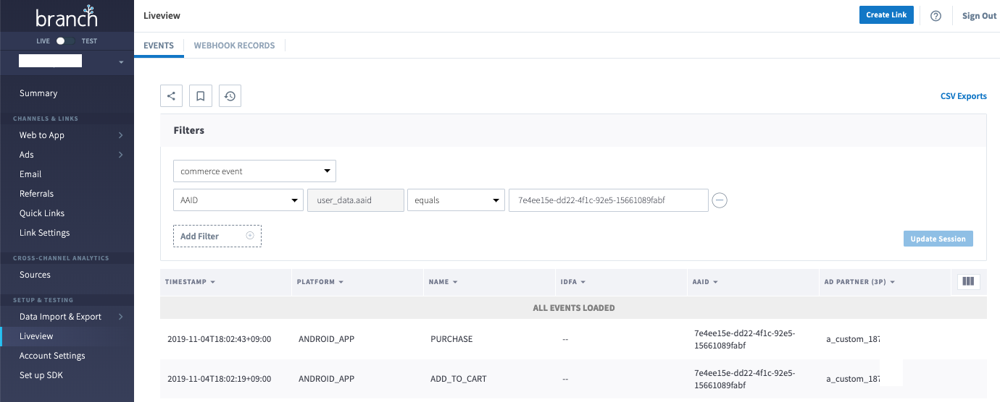
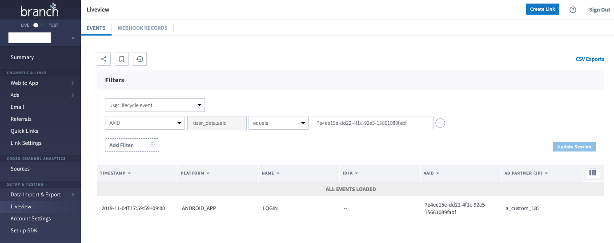

LiveView 로그 확인 가이드¶
- 작성자 : 손보형
- 업데이트: 2019년 11월 4일
LiveView 개요¶
- LiveView는 실시간으로 시스템에 수신되고 있는 이벤트들을 대쉬보드에서 확인할 수 있는 툴입니다.
- 테스트시 로그확인의 편의를 위한 툴이므로 테스트시 로그확인을 위한 목적으로만 사용하시기 바랍니다.
Datasource¶
-
Branch에서는 비슷한 성격의 이벤트들로 분류해서 아래의 각각의 Datasource에 저장됩니다.
Branch 이벤트 카테고리 EO 데이터소스 Install eo_install Reinstall eo_reinstall Open eo_open User lifecycle Event eo_user_lifecycle_event Content Event eo_content_event Commerce Event eo_commerce_event Custom Event eo_cucstom_event -
Install, Reinstall, Open을 제외한 이벤트들은 각각 종류별로 아래의 4개의 Datasource에 저장됩니다.
-
User lifecycle Event : 사용자가 앱을 사용하면서 어떤 단계별로 발생되는 이벤트
Branch 이벤트네임 TUNE 이벤트네임 COMPLETE_REGISTRATION registration LOGIN login INVITE invite COMPLETE_TUTORIAL tutorial_complete ACHIEVE_LEVEL level_achieved UNLOCK_ACHIEVEMENT achievement_unlocked -
Content Event : 앱내 컨텐츠에 관련된 이벤트
Branch 이벤트네임 TUNE 이벤트네임 VIEW_ITEM content_view SEARCH search RATE rated -
Commerce Event : 상품 구매에 관련된 이벤트
Branch 이벤트네임 TUNE 이벤트네임 ADD_TO_CART add_to_cart ADD_TO_WISHLIST add_to_wishlist VIEW_CART N/A INITIATE_PURCHASE checkout_initiated ADD_PAYMENT_INFO added_payment_info PURCHASE purchase SPEND_CREDITS spent_credits -
Custom Event : 위의 표준이벤트에 속하지 않는 이벤트들
-
LiveView 페이지¶
- Filters 섹션
- 최상단 드랍다운 메슈는 필수선택으로 확인하고자하는 이벤트가 속한 Datasource를 선택합니다.
[Add Filter]버튼을 클릭해서 다양한 필터링 옵션을 추가할수 있습니다.- 설정한 모든 개별 조건들은 AND 조건으로 모든 조건이 만족되는 로그만 표시됩니다.
- 로그 확인 섹션
- 최상단 행의 우측의 3개의 세로바를 선택후 로그에서 확인하고자하는 정보들을 추가 할수 있습니다.
사용시 주의사항¶
- 실시간으로 수신되고 로그들을 확인하는 툴 이므로
[Update Session]버튼을 클릭하기 이전에 이미 수신된 로그는 확인할 수 없습니다. 그러므로[Update Session]버튼을 클릭후 이벤트를 전송해 주시기 바랍니다. - 앱이 라이브된 이후 대량의 이벤트가 수신되고 있을때는 필터링 조건이 없을 경우 실시간으로 수신되는 모든 로그를 확인할 수 없습니다. 꼭 필터 조건을 설정하셔서 특정 기기에서 전송된 로그로 조건을 좁혀 주셔야 원하시는 로그를 확인할수 있습니다.
- 일반적으로 로그는 전송후 대략 1~2분 이후에 LiveView에서 확인이 가능합니다.
Filters섹션에서 최상단 드랍다운 박스는 Datasource를 선택하는 곳입니다. LiveView는 실시간으로 해당 Datasource에 해당되는 로그들만 실시간 모니터링이 가능합니다. 약간 번거롭지만 로그확인시 확인하고자 하는 로그가 포함된 Datasource를 선택후 해당 이벤트를 전송하셔야 로그확인이 가능합니다.- 권장 필터링 조건
- 안드로이드 : Google AID 설정 권장. 드랍다운 메뉴에서
AAID선택 - iOS : IDFA 를 설정 권장. 드랍다운 메뉴에서
AAID선택 - 안드로이드/iOS : Public IP 주소 권장. 드랍다운 메뉴에서
ip address선택
- 안드로이드 : Google AID 설정 권장. 드랍다운 메뉴에서
- 특정 Datasource에서 일단 확인된 로그는 다른 Datasource를 바꿨다가 다시 돌아왔을때 다시 확인이 가능합니다.
-
인스톨 테스트 순서 및 주의사항
- 1 . 브라우저의 캐쉬 삭제. (브라우저별 가이드 참고)
- 2 . 앱 삭제 (현재 기기에 이미 설치된 경우)
- 3 . 광고아이디 리셋
- iOS의 경우 광고추적금지 설정이 활성화 된 경우. IDFA가 수집되지 않음을 유의하세요.
- 4 .(인스톨 애트리뷰션 테스트시) 가급적 크롬 또는 사파리에서 클릭
- 메신저에서 클릭할 경우 해당 메신저의 브라우저에서 Branch 링크가 열리는 경우, 경우에 따라 브라우저 캐쉬문재로 Install 대신 Reinstall로 측정될 수 있습니다.
-
이벤트의 기록빈도 제한이 설정된 이벤트의 경우는 이 제한에 의해서 기록이 거부된 이벤트는 확인되지 않습니다.
TUNE SDK 연동앱 주의사항¶
- Branch의 이벤트 네임은 TUNE이벤트 네임과 다를 수 있습니다.
- TUNE SDK가 연동된 앱에서의 오픈테스트의 경우는 24시간내 1개의 오픈만 기록되도록 기록제한이 있으므로 전송한 모든 오픈이벤트가 로그에서 확인되지는 않습니다.
필터링을 위한 기기 광고아이디와 IP주소 확인 방법¶
- OS별로 Google Play와 앱스토어에서 아래의 앱을 설치해서 확인해 주시기 바랍니다.
- Android: Branch Device ID Finder
- iOS: Branch Device ID Finder
LiveView를 활용한 로그확인 순서¶
- LiveView최상단 드랍다운 박스에서 Datasource를 선택 테스트시 이벤트별로 어떤 것을 선택해야하는 지는 위의 Datasource 섹션의 표를 참고 해주시기 바랍니다.
- 이벤트를 발생시키기전에 먼저 드랍다운 박스에서 해당 이벤트가 속한 Datasource를 선택한 뒤
[Update Session]클릭후 이벤트 전송. 보통 이벤트 전송 1~2분후에 이벤트가 표시됩니다. - 가끔 Warning 메시지가 노출되면
Start listening again.링크를 클릭합니다.
LiveView 로그별 샘플 스크린샷¶
-
로그출력 테이블의 우측상단 헤더행의 3개의 바 부분을 통해서 추가로 확인을 원하는 값들을 확인하실 수 있습니다.
-
클릭로그
- 클릭의 경우 테스트시 보통 광고아이디를 설정하지 않으므로
ip address또는~campaign,customer campaign등의 필터로 설정해서 확인하시는것을 권장드립니다.
- 클릭의 경우 테스트시 보통 광고아이디를 설정하지 않으므로
-
인스톨 로그
-
Content Event 로그 (VIEW_ITEM, SEARCH 등)
-
Commerce Event (ADD_TO_CART, PURCHASE 등) 
-
User lifecycle Event (COMPLETE_REGISTRATION, LOGIN 등) 